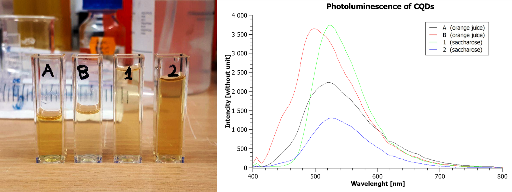

In two simple processes of colloidal thermal synthesis we‘ve managed to manufacture carbon quantum dots. The glow is clearly visible, color was limited to green but varies from sample to sample. The forming of CQDs is a complicated process but synthesis is trivial, it all comes down to decomposing a carbon source and recombining it as a tiny crystal. In first process we used ordinary white sugar (sucrose) and in the other one orange juice. CDs are soluble in water, bio compatible and very stable which is great start for bio experiments. Longer time of epitaxy correlated to narrower peak of emission thus more uniform size and shape of CDs.
First set of CQDs was made out of orange juice as a carbon source. 6ml of orange juice and 10ml of ethanol was mixed and heated to 65 °C then 30 mg of sodium bicarbonate was added and stirred for about 45 minutes. Then the mixture was cooled to room temperature, transferred to 4 probes and each mixed with 4ml of trichloroethane to eliminate organic compounds residue. Probes were then placed in centrifuge. Half of the separated layer (top) was transferred to beaker The other half was mixed with 4ml of acetone and placed again in the centrifuge. The remaining residue was recovered by evaporating acetone then 1ml of distill water was added and mixture was transferred to beaker B.
Second set of CQDs was made out of sugar. 10g of sucrose was dissolved in 70g of distilled water. Then 3.5g of hydrochloric acid was added. The mixture was heated to 80 °C and stirred for 1h. The change in color can be observed when sucrose is starting to break down. Heater was turned off after chunks of carbon were starting to form. The mixture was then cooled and neutralized with sodium bicarbonate. Then we filtered the solution to a beaker. and diluted it to a point of tint color as a concentrated solution exhibited very weak fluorescence.
Third synthesis was by far the simplest and brute. We poured some sulfuric acid on sugar and waited for a carbon sponge to form. Be aware that this reaction is quite rapid and very exothermic. The products of this reaction was then thoroughly mixed with water, neutralized and filtered. Concentration of CQDs was low but recovered solution was very transparent yet displayed a very strong blue luminescence under UV bulb. Unfortunately I haven‘t got time to test the spectrum of emission of blue CQDs but I‘ll be doing a lot of experiments with them so there‘ll be updated soon.
The CQDs emission spectra is shown in a picture below. The solutions A and B are from first synthesis, 1 and 2 are from second synthesis. Significant width of A spectra shows that the QDs are quite big and not uniform. Narrow and high spectra of B and 1 shows that the dots are uniform and give of monochromatic green light. The spectrum of 2 is the same as 1 but with more diffusion due to faster synthesis (more random particles).
